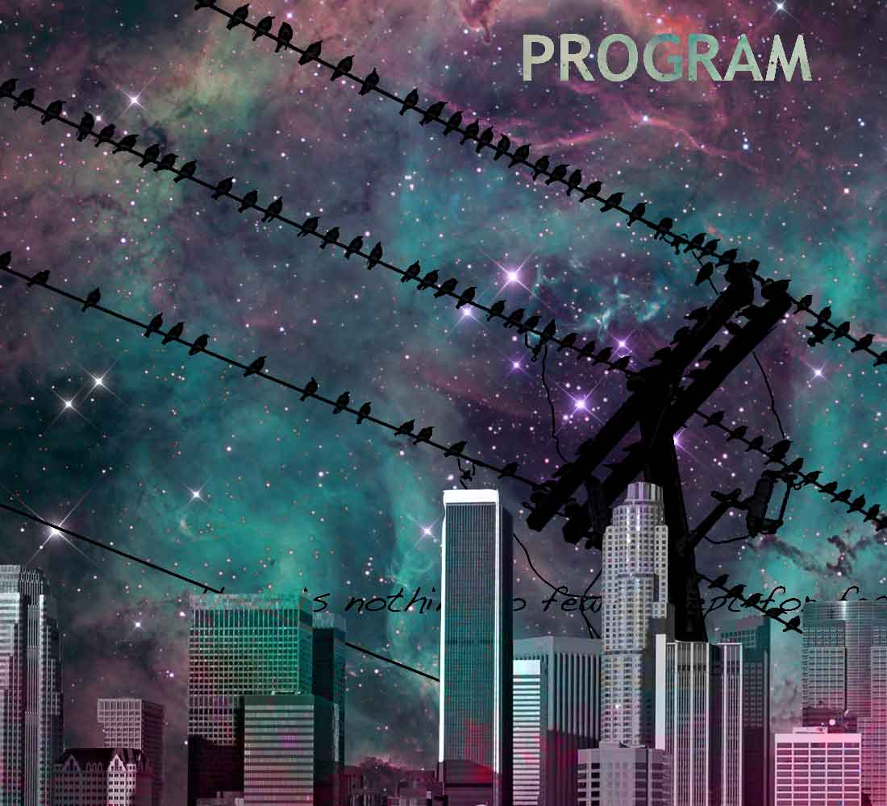

UNCA's new media program is designed to prepare students to go on to a graduate school. Some preparation is made throughtout the student's tenure to produce a portfolio. This portfolio can be used to get an intership or to apply to graduate school. This program should in no way substitute for hands-on, "real world" experience the kind that employers are looking for.
OUR PROGRAM:
UNCA's new media program is designed to prepare students to go on to a graduate school. Some preparation is made throughtout the student's tenure to produce a portfolio. This portfolio can be used to get an intership or to apply to graduate school. This program should in no way substitute for hands-on, "real world" experience the kind that employers are looking for.